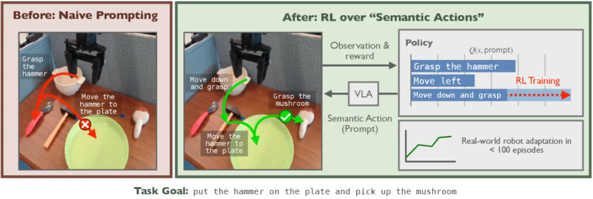
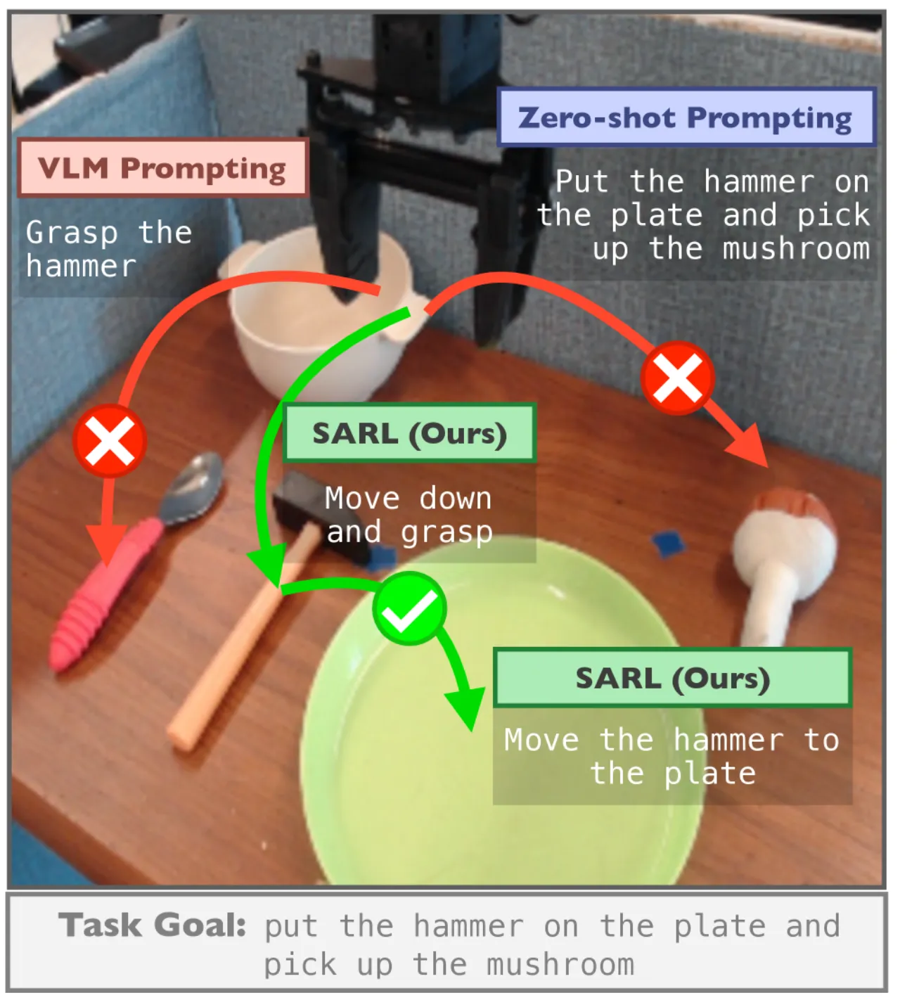
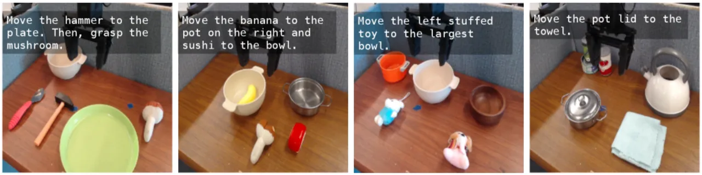
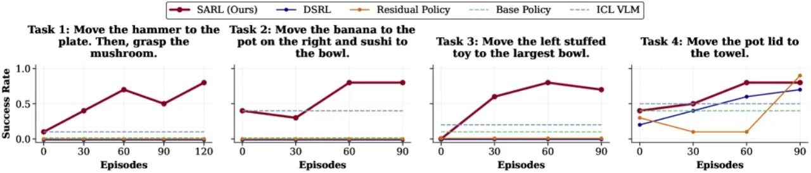
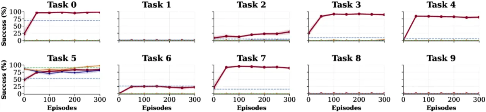

与其在机器人动作空间里做 RL，不如把 VLA 的语言 prompt 当作动作空间。SARL（Semantic Action Reinforcement Learning）通过在线交互学习"该发什么指令"，把已经藏在预训练里的技能重新组合，从而解决 zero-shot prompting 无法完成的复杂长程任务——真实机器人上仅 60–100 个 episode 就把成功率从近 0% 拉到约 80%。
VLA（vision-language-action）模型从大规模预训练中习得了广博的技能库，理论上是下游 RL 适配的强先验。但标准 RL 直接在机器人动作层面优化，要求 base policy 的动作分布一开始就接近最优策略——对于超出预训练分布的复杂、长程任务，这个假设崩溃了。而直接用一句复杂 prompt 让 VLA 完成新任务，往往同时败在两处：既不会把任务分解成可执行的原子行为，也无法把这些行为落地（ground）到机器人真正能成功执行的技能上。
"Our key insight is that … language prompts are an effective alternative space for learning to solve such tasks: modulating language inputs elicits skills already within the policy's repertoire, which can be composed to solve tasks beyond its zero-shot capabilities."
作者的核心洞见：把 VLA 视为一个可被语义控制的动作先验（semantically controllable action prior）。与其学习精确的低层动作，不如学习一串语义指令去"驾驶"它——例如做煎蛋："turn on the stove"、"open the fridge"、"grab the egg"……复用预训练技能、而非从零发现新技能，让搜索空间被任务语义天然约束，既保持探索的高表达力，又始终落在合理动作上。

SARL 把决策问题从原始 MDP 提升到一个"语义 MDP" ℳsem：动作不再是机器人动作 a∈𝒜robot，而是语言指令 ℓ∈𝒜sem，由 VLA 作为二者之间的转换器（a∼πvla(·|s,ℓ)）。在语义空间里探索，等于只在"语义上有意义、且被 VLA 先验覆盖"的行为里搜索，从而极大提升探索效率。

SARL 学习一个语义 Q 函数 Qsem，通过 temporal-difference (TD) backup 估计"在状态 s 下某条语义指令对完成任务 τ 的推进程度"。行动时从 Q 值诱导的 softmax 分布采样：πtsem(ℓ|s) ∝ exp(Qtsem(st, ℓ))。整个流程是一个在线 RL 循环（Algorithm 1），把学习从低层动作空间抬升到语义语言空间。
朴素地在"所有可能 prompt"上学习是不可行的。SARL 让一个 VLM 看当前图像观测 st 与高层任务 τ，生成一小组候选语义动作 𝒜tsem，仅在其中选择。为进一步简化，算法缓存并复用 VLM 提出的前 N∈{32, 64, 100} 条 prompt。
"VLMs alone are not effective at directly controlling VLAs … By interleaving VLM queries with real-world interaction, SARL is able to achieve the best-of-both worlds."
关键区别：VLM 能提出"看起来合理"的指令，却缺乏对"这条指令实际会诱发什么物理行为"的落地知识。SARL 把 VLM 的语义先验与真实交互交织：既借用 VLM 的分解能力，又通过经验把语义动作落地到 VLA 的实际行为上，从而在先验之上持续改进。
在仿真 Libero-10 与四个真实 WidowX 长程任务上评估。base VLA 基于 π0.5，分别在 Libero-90 与 Bridge v2 上微调；这些任务被特意设计为多阶段、长程，base policy 在每个 setting 里都只在一个任务上有像样表现。真实实验中每个任务预先注入 3 条完整演示到 SARL 与 Residual RL 的 replay buffer（DSRL 因在 latent-noise 空间学习而无法吸收演示）。

基线：（动作空间 RL 类）DSRL——在扩散策略的 latent-noise 空间做 steering；Residual RL——学习一个对 base policy 动作做小幅修正的残差策略。（自适应改 prompt 类）ICL-VLM——用 in-context learning 处理历史观测来选 prompt。
在 Libero-10 与四个真实任务上，SARL 都把 base VLA 在原 task prompt 下近 0% 的成功率提升到约 80%，仅需 60–100 个在线 episode。这说明 VLA 的 prompt 空间是一个表达力强、质量高的探索与学习空间——只调语言输入，就能诱发朴素 prompting 无法展现的解题行为。


为什么动作空间 RL 不行？作者的诊断：(1) 现有 steering 方法被锁死在单一 task prompt 上；(2) 在这个 prompt 下，base policy 的动作分布并不覆盖解题所需的多样动作。zero-shot prompt 下，base policy 的动作分布往往坍缩到完全错误的模式——如让 VLA "move the hammer to the plate. then, grasp the mushroom"，它却把 mushroom 移到盘子并抓起一把勺子（Figure 6）。
"DSRL can filter to find good actions from the base policy's distribution, but cannot synthesize fundamentally new ones … residual RL is restricted to exploring a narrow funnel around the base policy's actions."
因此这两类基线只在 base policy 本已接近成功时才学得动（如 Libero Task 5 或真实 Task 4）；而 SARL 不受此约束，通过调 prompt 去探索动作 steering 完全够不到的先验区域，在五个 Libero-10 任务与全部 WidowX 任务上推进显著。
ICL-VLM 基线优于 zero-shot，证实"任务分解确实有用"；但 SARL 全面超越 VLM。原因（Figure 7）：VLM 常选出"语义上合理却仍执行失败"的指令——如点名"hammer"（OOD 物体）反而让 VLA 去抓勺子，只有空间指令"move right"能成功引导；又如选错动词"drop"，导致 VLA 在到达目标前就松开寿司。VLM 能在单个 episode 内 in-context 学习，却无法从这类失败中恢复；而 SARL 通过多次经验学到每条语言指令诱发的落地行为，据此恰当选指令。
每步都要查询 VLM 生成/筛选候选语义动作，带来推理开销。作者提出的一个延伸方向：研究部署时是否仍需 VLM，或学到的 Q 函数能否自行泛化。
SARL 的前提是：VLA 在不同指令下能产生足够多样的行为。作者相信社区会持续发展更强的 language-conditioned policy，从而让本方法愈发适用，并希望本工作能激励训练具备更好 language-following 能力的策略。
Figure 4 显示 四个 Libero-10 任务任何方法都未解决；真实实验中每任务需 3 条演示注入 replay buffer，且语义动作候选依赖 VLM prompt 与缓存规模 N 等设置——这些属于从实验设计推断的实际约束，非作者在 §6 单列。